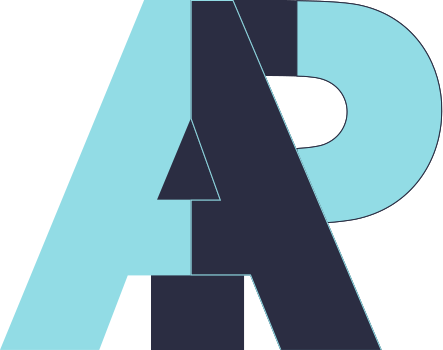

<!-- Navbar -->
<nav id="myNav" class="navbar navbar-expand-lg sticky-top" [class]="navbarColor">
  <div class="container">
    <a class="navbar-brand" href="/">
      
    </a>
    <button
      class="navbar-toggler"
      type="button"
      data-bs-toggle="collapse"
      data-bs-target="#navbarNav"
      aria-controls="navbarNav"
      aria-expanded="false"
      aria-label="Toggle navigation"
    >
      <span class="navbar-toggler-icon"></span>
    </button>
    <div class="collapse navbar-collapse" id="navbarNav">
      <ul class="navbar-nav ms-auto">
        <li class="nav-item">
          <a class="nav-link link-animation" href="#landing">Home</a>
        </li>
        <li class="nav-item">
          <a class="nav-link link-animation" href="#projects">Projects</a>
        </li>
        <li class="nav-item">
          <a class="nav-link link-animation" href="#myFooter">Contact</a>
        </li>
        <!-- <li class="nav-item">
          <a class="nav-link disabled">Blog</a>
        </li> -->
      </ul>
    </div>
  </div>
</nav>
<!-- Navbar End -->
<div id="landing">
  <app-landing></app-landing>
</div>
<!-- <div id="blog">
  <app-blog></app-blog>
</div> -->
<div id="projects">
  <app-projects></app-projects>
</div>


<!-- Footer -->
<div id="myFooter" class="container">
  <footer class="py-3 my-4">
    <ul class="nav justify-content-center fs-3">
      <li class="nav-item">
        <a target="_blank" href="https://www.instagram.com/aniporoorkara/" class="nav-link px-2"><i class="bi bi-instagram"></i></a>
      </li>
      <li class="nav-item">
        <a target="_blank" class="nav-link px-2" href="mailto:pdani444@gmail.com"
          ><i class="bi bi-envelope-at"></i
        ></a>
      </li>
      <li class="nav-item">
        <a
          href="https://github.com/ani-poroorkara"
          target="_blank"
          class="nav-link px-2"
          ><i class="bi bi-github"></i
        ></a>
      </li>
      <li class="nav-item">
        <a
          href="https://www.linkedin.com/in/anirudh-poroorkara/"
          target="_blank"
          class="nav-link px-2"
          ><i class="bi bi-linkedin"></i
        ></a>
      </li>
      <li class="nav-item">
        <a target="_blank" href="https://open.spotify.com/user/312vugz3xsllvakm4zvtuapv2fmi" class="nav-link px-2"><i class="bi bi-spotify"></i></a>
      </li>
      <li class="nav-item">
        <a target="_blank" href="https://ani-poroorkara.github.io/blog/" class="nav-link px-2"><i class="bi bi-journals"></i></a>
      </li>
    </ul>
    <p class="text-center small">
      Anirudh Poroorkara | Copyright © 2022
      <a target="_blank" href="https://github.com/ani-poroorkara"
        >ani-poroorkara</a
      >
    </p>
  </footer>
</div>
<!-- Footer End -->
